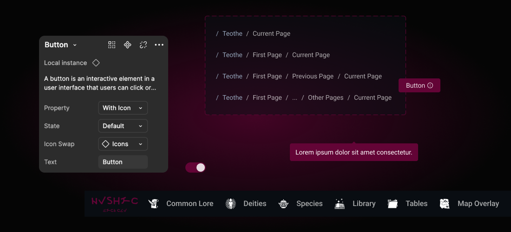

Portfolio Details
Project Goal
Create a scalable design system to support a Progressive Web App (PWA) interface for tabletop role-playing game sessions.
My Role
As the sole UX/UI designer, I led the full design system creation, establishing components and documentation for a consistent, accessible UI. I ensured WCAG 2.1 compliance and worked directly with the client to tailor the system to user needs.
Teothe is an independent tabletop setting dashboard designed to make accessing and managing D&D (Dungeons and Dragons) campaigns easy and simple. It’s built as a Progressive Web App (PWA) for a seamless experience across different devices. The design system ensures a consistent, scalable UI, providing users with intuitive tools that enhance the game experience. This project focuses on visual cohesion and efficiency, helping users effortlessly navigate game elements.
UX/UI Methodologies & Techniques – Teothe Design Systems
Research & Discovery
Specific component-level UX research tailored to tabletop gaming workflows
Usability testing sessions with Dungeons & Dragons players to validate patterns
Accessibility audits and testing to ensure compliance with WCAG 2.1
System Design
Interaction design for reusable components across desktop and mobile interfaces
Visual UI design aligned with the brand's fantasy-adjacent identity
Creation of a scalable pattern library using atomic design principles
Development of a style guide covering typography, colour, spacing, and iconography
Collaboration & Documentation
Regular stakeholder feedback sessions to align design direction with product vision
Clear Figma documentation to support handoff and reuse
Design decision documentation for future scalability and design consistency
Testing & Iteration
Component usability validation and iteration based on user and stakeholder input
Accessibility testing using Lighthouse and manual checks
Continuous feedback loop with the client for improvements during the contract period
Key Metrics
The Challenge
When the project manager contracted me they needed help developing a simple and intuitive website. For this contract project, we held various meetings and testing.
I needed to: Create a simple design system where it wouldn't tire the developers later on Ensure design consistency across pages
The Benefits
Ability to replicate designs quickly with pre-made components and elements.
Merging and leveraging existing systems and creating our own branch.
Reducing work time for developers.
The Impact
100 across the board. See for yourself!
The Approach
I began by researching existing design systems to reimagine for Teothe. After discussions with the project manager/contractor, we decided to implement Ant Design and Tailwind.
My next step was to focus on crafting a unique brand identity to set Teothe apart from our reference systems.
The priority was to create user-friendly components and clean designs, ensuring that both players and game masters could quickly access the necessary information without feeling overwhelmed.
Design System consists of
- Components: modular elements like buttons, tables etc.
- Styles & Visuals: typography, colours and icons
- Sample Page: a showcase of elements to use
What I learned
As the UX designer & researcher on the Teothe Design Systems project, I learned how to create a flexible, scalable design system tailored to both the user and developer experience. This project allowed me to refine my skills in component-level design, ensuring reusability and consistency. By prioritizing accessibility and collaborating closely with developers, I gained a deeper understanding of how design systems must evolve in parallel with the product. Additionally, I learned the importance of iterative feedback loops and how to ensure that design systems are sustainable in the long term.